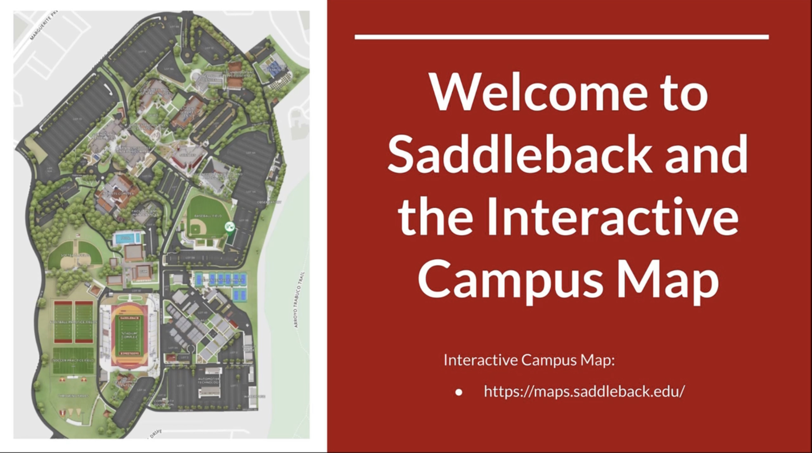

During my time at Saddleback I joined the Phi Theta Kappa honors society and became the VP of Service. As the VP of Service a primary responsibility was leading the yearly College Project. The College Project is a service project that is meant to give back to the college administration.
Initially I met with the College President to discuss the needs of the school and how we could potentially help. Taking this information I then met with my team where we drafted a project proposal for the administration to agree on. At the time of the project the school was slowly working towards returning to in person after a long period of purely remote learning. As such it was identified that rebuilding and fostering a community was the main priority of the school. Taking this goal my team reflected on what personally held us back from feeling comfortable on campus and ultimately landed on a primary reason being we had no idea how to get around campus. The goal was that if we could help make students more confident with how to get around, they will feel more welcome and comfortable on campus, creating a stronger community.
To execute this project we identified the strengths and capabilities of the team from planning, to filming, to audio to see who can take on what tasks and where we may need more help. At this point we got to work drafting video concepts, planning how we would execute them, and then going to campus to begin the filming. During the planning phase as the lead I was tasked with contacting the dean of each depatment to get their feedback about what they would like to see in the videos. Some of the feedback included making certain points about a building feature that tends to confuse students along with requests to use the videos to also inform students of resources available to them such as ADA accessible maps and details.
Taking all of the feedback into consideration we landed on the idea that it would be most effective to make a seperate video for each building that consisted of a walkthrough with a voiceover explaining key features of each building. The outcome of this project was a series of __ videos posted to the Honor’s Program YouTube page and the Student Support Hub (a common point for students to quickly access resources in Canvas, the primary platform that students and professors utilized).
Following the completion of the project, my team put together a write up to submit the details of our chapter’s college project to our region and ultimately the entire organization. It was at this point that we received the award Most Distinguished College Porject in the Nevada California region along with Distinguished Chapter Project on a natiional level. It was rewarding seeing the outcomes of this project, from the feedback on the videos to the awards we received. This was the first genuine opportunity I had to lead a team on a real project.
Link to videos: Tour Videos